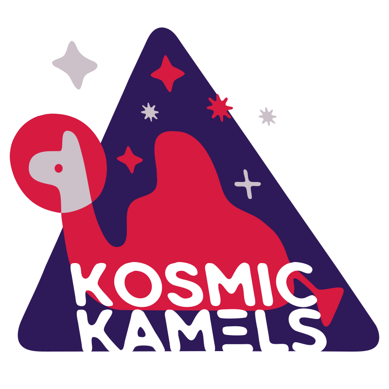
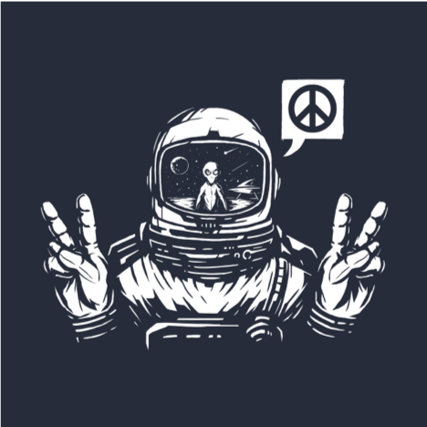
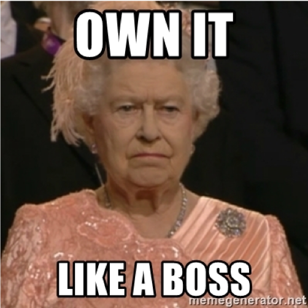
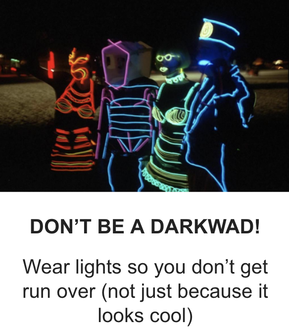
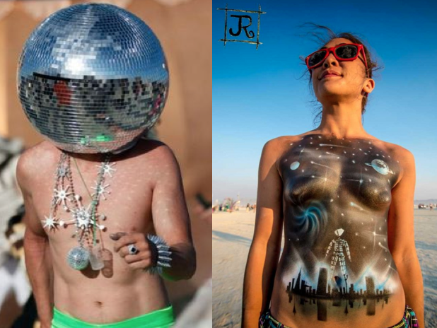
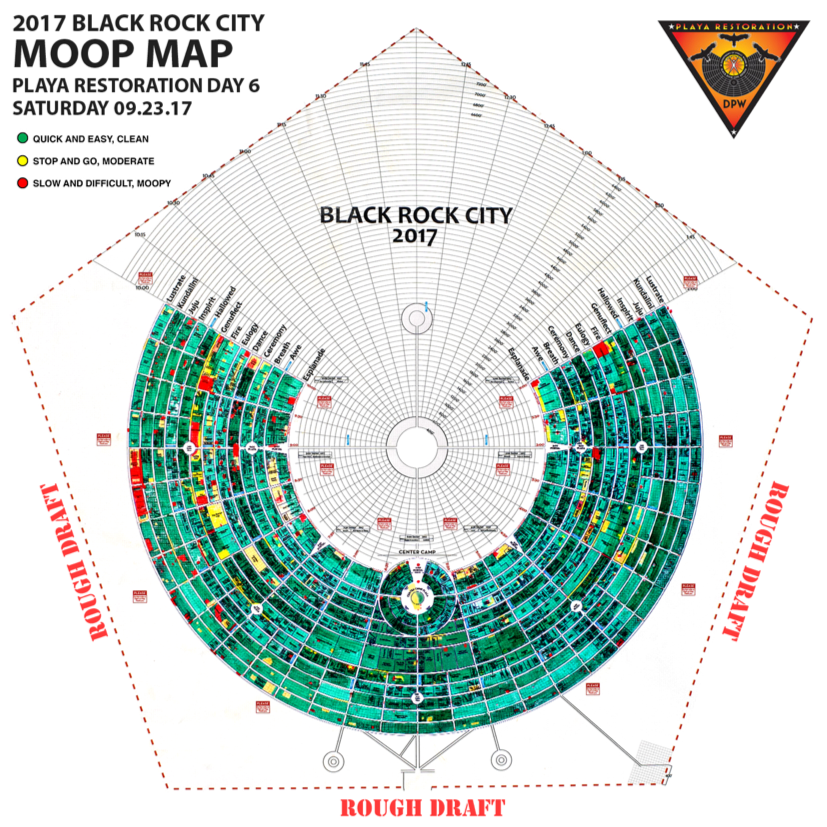
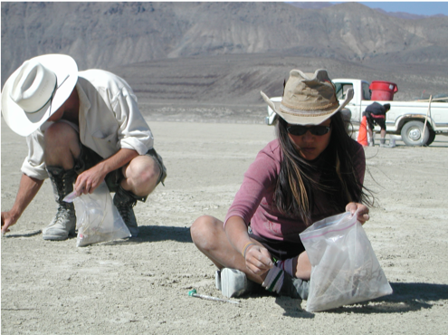
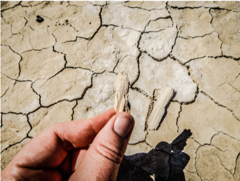

Welcome to
Kosmic Kamels
If you made it here accidentally but you feel the calling to join us, you can apply using the link on the upper right corner of this page or contact us by email

follow us on social
Contact at
kosmickamels.swana at gmail dot com.
Who Are We?
We are a family of Kosmic dreamers and doers based in SWANA (South West Asia & North Africa) separated by borders and united in our commitment to co-creating a better future.
This year, we are partaking in this cool ensemble called the Multicultural Neighborhood.
Manifesto

We, the Kamels, are deeply connected to the work it will take to build a radically different future: where all people can live safely and freely in connection and exploration of their ancestral land, heritage, roots, and inner being and expression. We believe in shaking the oppressive borders and structures of the status quo.
Thus, the Kosmic Kamels have hoisted an interplanetary tent for people across borders to have good conversation, dream, play, and feel safe and nourished in the company of one another. Eye to eye and heart to heart. On the playa, we honor our common heritage of hospitality, welcoming the weary passersby into our tent with warm tea and dark coffee, shade, a good smoke, an engaging conversation... or by banging DJ set to shake off your defaults.
We take our fun very seriously. We believe the future we want to live in can only be visioned and co-created from spaces of love and joy. Play and creativity. Our Kosmic Kommittment is to “funsciousness”: prioritizing fun/joy while simultaneously building a community based on an awareness and action around our sometimes less fun realities. Funsciousess is conscious fun rooted in love, respect, and solidarity.
We do not shy away from difficult conversations and we invite visionary conversations that pave new ways forward. We are committed to constantly learning and not ignoring the vast differences of power, experience and access to equality across our region. We dream of a future that we could ALL get on a train and see the places we can’t. We want our camp and its people to start laying down the tracks… From Cairo to catch a DJ in Beirut, by way of Sinai, Gaza, Jaffa and Haifa, then swing through Damascus and down to Amman. Nobody’s free until everybody’s free ✌️🔥
Camp Offerings
Our camp will offer the following:
- Shade, comfy seating to just come and chill 🧊
- Dark, strong coffee and tea ☕
- Fireside live music 🎵
- Shesh-besh and hookah 🎲
- Sajj cooking 🍲
- Dates, Baklava and other goodies from the region 🍬
- Electro-Arab DJ sets 🏜️
and... all you feel inspired to bring and co-create with us this year!
The gift of hosting:
- Each Kamel gifts 2-3 hosting shifts on the playa.
- These will be the “sheikh your ass” crew - they will be in charge of welcoming weary travelers to our haven of love.
- Greeting, prepping and serving tea/coffee area, perhaps lighting a coal for a hookah - making people feel at home.
- Join conversations, tell your tales of Arabian nights, encourage people to sheikh their ass to the electro-arab music and, if you’re into it - stay in character ;) Have fun with it!!
Kamel, What is Your Offering?
What is your gift? The Kosmic Kamels desert ship welcomes you to use it as a platform. We have a lovely space to host events. Think about any offering, activity, workshop, weird massage circle you want to offer the camp and more importantly - the citizens of Black Rock City. Feel free to join activities too!
Some activities our alumni Kamels provided:
- Psychedelic Q&A
- Yoga classes
- DJ sets
Roles & Responsibilities

What role do you play? we are looking to fill up the following roles.
* in addition to the roles below, everyone will also sign up for shifts loading or unloading the trucks, building the camp or tear down, and hosting people at camp for coffee and shisha *
- Builder-in-Chiefs (2)
- You two will lead the build (with a big team of helpers)
- Build includes: shade structures throughout the camp and our main big bedouin tent
- Skills required: experience designing and building, at least one of these leads has led a camp build before, PLUS experience building a bedouin tent
- Sheikh of Break Down (1)
- You will coordinate with the builder in chiefs so you know what’s up, but your job is to be the point person leading break down (with a big team of helpers)
- Leave no trace is key - you will work closely with the MOOP Master
- Skills required: experience
- MOOP Master (1) (MOOP = Matter Out Of Place = garbage)
- You will set up recycling and garbage for the camp, and teach us about it
- You arrange for garbage disposal after the burn
- You will work with Kamels to ensure we leave no trace on the playa!!
- Design Maven (1)
- You will lead the interior design of our main big tent - we have lots of stuff, it still needs lots of love, intention and pizazz
- Skills required: inspiration around interior or set design, experience with a staple gun helps :)
- Empowerer (1)
- You will design and install the power grid for the camp, and research what is needed before that we don’t already have
- Skills required: familiarity and proclivity for electricity
- Water Keeper (1)
- You will arrange, set up and teach the camp about grey and fresh water
- You will arrange for the disposal of greywater after the burn
- Sound Master (1)
- You will arrange and set up the sound system, as well as coordinate and schedule DJ sets
- Skills required: knowledge and experience with sound systems
- Logistics Gurus (2)
- You two will lead truck packing from storage to playa and back
- Skills required: a logistics mind, a talent for puzzles / packing trucks, and patience
- Head of Stuff (1)
- You will work with the two logistics gurus to track all of our gear from storage to playa and back. We keep a rough record to make it easy for next year
- Master Chef (1)
- You will lead Kitchen design and set up, including storage and cooling logistics and compost disposal
- You will also lead camp meals
- Banker Boss (1)
- You will oversee the budget! You will also collect camp dues and figure out the best system to store our money
- Skills required: budget & finance skills
- Hostesses with the Mostesses & Programming (2)
- You two will lead our efforts hosting other burners passing by and building our Kosmic program of events & content
- You will coordinate and arrange for the coffee, tea, shisha, sajj / and anything else you feel inspired to add
- You will arrange and assign shifts for other kamels throughout the week
- You will build a program & coordinate the relevant events & people
- Raiser of the Funds (1)
- You will lead our efforts to fundraise so all kamels can attend regardless of cost
- Last time, this involved coordinating two events, and applying for a grant – but we are very open to other ideas!
Camp Dues
Camp Dues:
- We have 3 tiers of camp dues: $500, $750, $1000
- For Kamels who can’t afford these dues, we are committed to fundraising to ensure we have Kamels from all across the Kosmos! However, we can’t promise anything, we are doing our very best!
- Payment methods will be updated as we go.
Keep in mind that camp dues are in addition to the BM ticket and flights.
The 10 Principles
The 10 Principles of Burning Man are a mandatory reading for the Kamel Virgins among us:
- Participation - deep personal participation ➡️ transformative change!
- Communal effort
- Our Camp’s community values creative cooperation and collaboration when:
- organizing the camp ahead of BM ➡️ taking a role in the org teams
- setting up the camp and building it ➡️ showing up when we organize prep events
- enjoying and sharing it
- We strive to produce, promote, and protect:
- social networks ➡️ many groups of friends joining 🙂
- public spaces ➡️ design and build comfortable sharing space
- works of art
- methods of communication that support such interaction ➡️ be inviting and hospitable
- Radical Inclusion & Gifting
- Start with the camp: don’t be a stranger! Our camp is a community, and hopefully we all leave with friendships that last beyond the Playa
- Strangers welcome: we’re hosting a happy hour and seek to be a welcoming place for anyone around
- Gifting as a camp: we’re giving out pasta from our cart! Participate! It’s fun to share
- Gifting will make you happy: bring gifts with you and prepare to gift them unconditionally. Seriously, the only thing more pleasant than receiving a gift unconditionally, is giving a gift unconditionally
- Radical Self Reliance
Golden Rule: If you absolutely NEED something, bring it yourself (or watch it get loaded onto the truck)

- BM is in a hot (and cold) desert. We must bring everything we need to survive with us. It’s not Coachella
- Stuff people forget to bring: Flashlights, personal lighting, goggles (for day and night), a dust mask, tools, a bike, a camping chair, warm night time clothes, a CamelBak, trashbags, sealable plastic bags, a plate, utensils, a cup, ID (must be 21 to drink; you can usually use a photocopy) You can also google “Burning Man Packing Lists” for helpful ideas
- Think about all the stuff you use on a daily basis and make sure you have it
- Burning Man is dangerous - quite literally - there are no permits, load testing, etc. The platform you’re standing on could break. Don’t be stupid.
- Burning Man is hard and it will test you. The difficulty is what preserves it. Just roll with the punches, obstacles are new opportunities to meet people.
- Examples: tent collapses, waiting in line 26 hours, your food went bad, generator breaks, mechanical issues with bike
- Immediacy (“Just Say Yes”)
What Is Immediacy/Why Is It So Important?
Unlike the other principles of Burning Man, Immediacy may be one of the hardest to understand and actively implement, but is arguably one of the most important. Immediacy is better understood as the quality of your experience at Burning Man and one that should be consciously brought into your everyday life outside.
As people, we truly seek to overcome barriers that stand between us and a recognition of our innerselves, the reality of those around us, participation in society, and contact with a natural world exceeding human powers. Immediacy is allowing yourself to think and act freely and independent of anything but yourself in order to awaken from the complication of your life and truly understand yourself in the rawest form.
Examples - thought runs through your head to climb that installation - DO IT, ever think “we should get on that art car?” - DON'T THINK JUST DO IT - see where the playa takes you
- Radical Self-Expression
What Is Radical Self-Expression/Why Is It Important?

- Radical self-expression arises from the unique gifts of you as an individual. No one other than you or a group you opt into can determine its content. It’s yours. Be proud. Express yourself in colors, in fabrics, in nothing, in a message, whatever you want, use your body as a canvas and express yourself how you want to. This is your first gift to the playa.
- DON’T BE SCARED TO BE WHATEVER IT IS THAT YOU ARE THAT DAY
BE MINDFUL OF MOOP - i.e. feathers, sequins, leather, anything that sheds, things that fall off easily, etc.
- Leave No Trace
- Why
- Leave No Trace means it is our responsibility to leave Burning Man cleaner than we found it

- You will not see any trash, cups, glass, paper, etc on the ground at BM - you can walk around barefoot
- At the end of BM, organizers do a full sweep of the playa and mark trash down to the nearest foot
- Camps that are not ‘green’ lose placement preferences the next year
- If the state of Nevada finds trash, BM can be banned in future years
- Trash is called MOOP - Matter Out Of Place
- How
- MOOP is your individual responsibility - BM does not provide trash cans
- ‘Keep It From Hitting the Ground’ - When you go out, bring a small reusable bag to store your trash (beer cans, wrappers, etc)
- ‘Clean As We Go’ - Pick up any trash you see, even if it’s not yours, even if it’s someone else’s camp. Someone will have to pick it up, so just do it. Keep sealable plastic bags in your backpack to hold it

- BEFORE you leave home - unwrap, unpack all your stuff. (Eg take your new CamelBak out of it’s box and remove all packaging before you leave)
- Pack It Out - when you leave BM, make sure you are taking trash bags with you in your car. The camp truck is reserved for bulky items, not trash
- Final sweep - Before you leave, do an inch by inch sweep of your area and the camp in general. Everyone should do their part
- Bring 1-2 trashbags for your own tent
- Don’t bring feathers, confetti, sequins, shaggy carpets, or anything that may shed
- What
MOOP at BM is different than trash at home. These things are MOOP:
- Hair
- Crumbs from nachos

- A piece of string
- Spilled drinks
- Cigarette butts
- Pee
- Ashes from a fire
- Grey water
- Civic Responsibility
- BM is on Federal land in the state of Nevada. Laws apply. There are undercover police - some are naked. Police use night vision
- The following laws are enforced:
- Don’t distribute alcohol to minors - ID people!
- Illegal substances (including marijuana)
- Most police are really nice and there to help, so long as you aren’t an idiot
- Black Rock Rangers are provided by BM. They are like coaches, trying to prevent issues before they happen
- Help people in need
- Be an adult
- Decommodification
- No transactions, advertising, branding, or sponsorships. Since you’ve adhered to the principle of radical self-reliance, you’re good to go! Don’t buy, sell or advertise things - stick to gifting
BUT some services are purchasable on the Playa:
- Coffee, chai, lemonade, etc are sold at Center Camp by BM organizers
- Ice sales at 3 o’clock portal and 9 o’clock portal from 9am to 6pm at Arctica benefits the local Gerlach-Empire school system
- Tickets for Green Tortoise shuttle bus to Gerlach and Empire, NV
- Re-entry wristband can be purchased at the gate upon exit
- Airport use fee if you fly in via the BRC airport
- Diesel/bio-diesel sold by third parties
- RV dump services and camp graywater disposal service